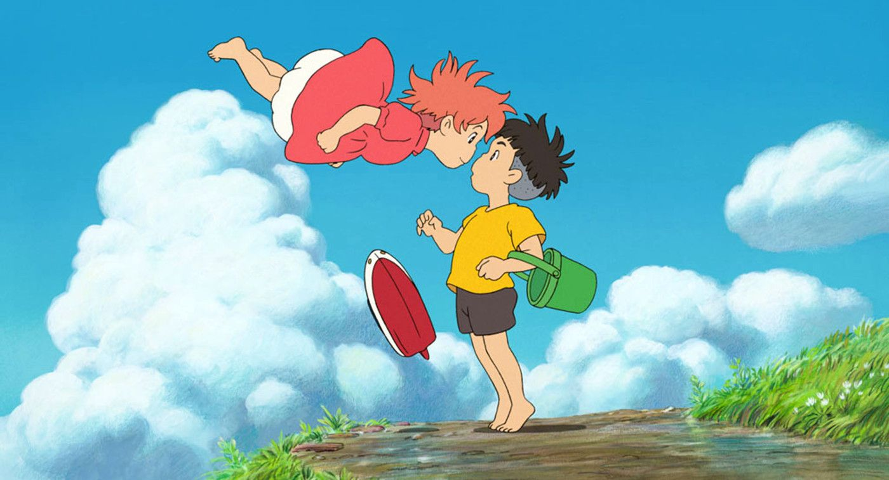
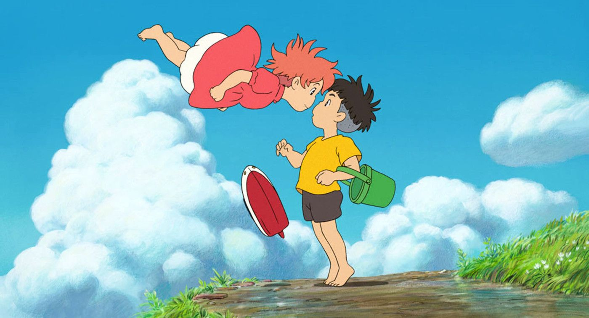
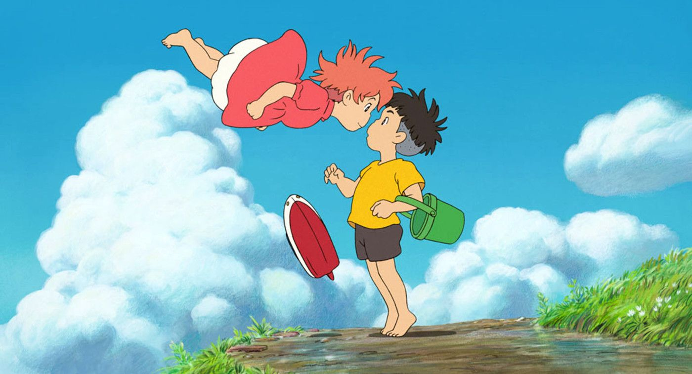

Susanna Feng
Undergraduate at University of California, Riverside
Career Goals: Family Physician MD / DO
Hobbies: Cooking, Reading, Listening to music, and watching Korean or Chinese Dramas
Hello, my name is Susanna Feng, a student currently pursuing a Bachelor in Science for Business Administration. Within the next quarter, I will sign Life Science Contract for CHASS students that would like to pursue the medical field.
Within the next four years at Riverside, I hope to attend many social events involving business or medical to broaden my horizon. In addition, I would like to apply to internships, work in clinics, or volunteer at hospitals to understand the environment and what I could expect in the future.
My current career goal is to become a family physician, and it doesn’t matter if it is in MD or DO. The main difference between these two physicians is that the Doctor of Medicine treats conditions with medications or surgery. In contrast, the DO or Doctor of Osteopathic Medicine focuses on the overall body to heal and disease prevention. The main reason for pursuing this career pathway is that I’d like to help people through their weak times, whether mental or physical pain, and I want to continuously learn about the human body as new diseases may occur or present themselves in different ways.
Experience
Hong Kong Garden
• Calculated checks
• Customer Service
• Experience with chopping vegetables, servering tables, cleaning tables, cleaning cups, and more.
Job Shadow
• Observed doctor and patient relationship and communication
• Helped nurse with medical equipment
Track and Fields Head Manager
• Memorized each person's name and which race they participated in
• Marked all their names with their times onto a piece a paper for the Track and Fields coach
• Went to every match against different middle schools
Education
UC Riverside
Sonora High School
Columbia College
Portfolio
 


